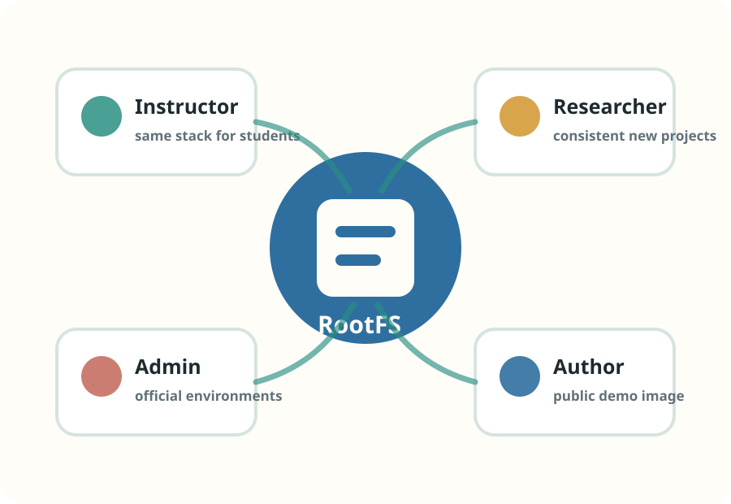
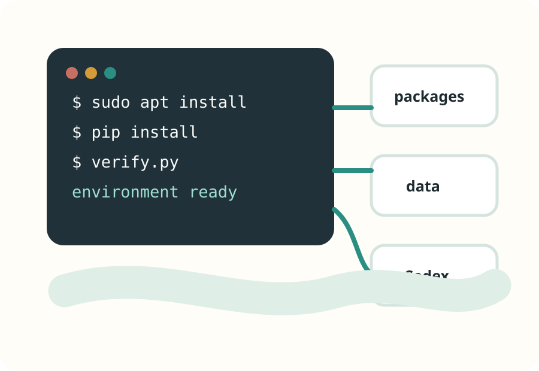
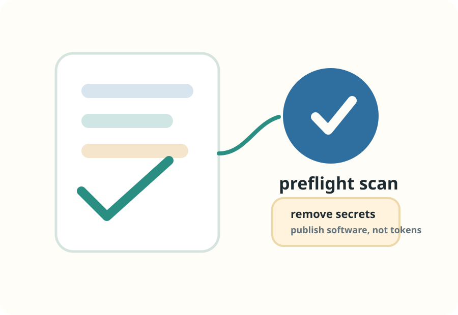
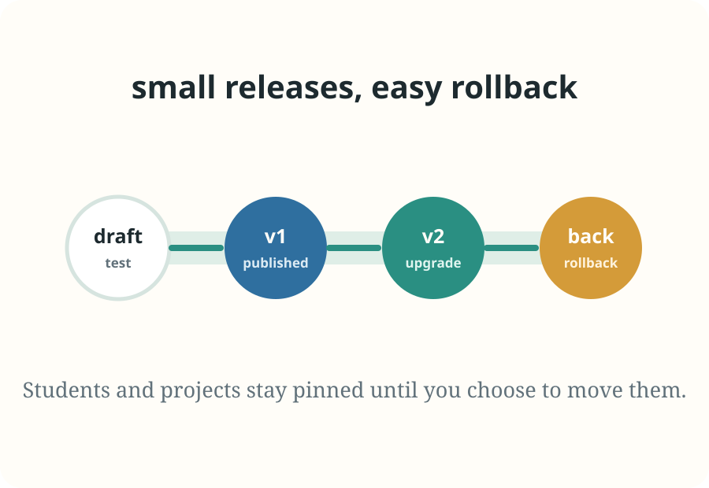
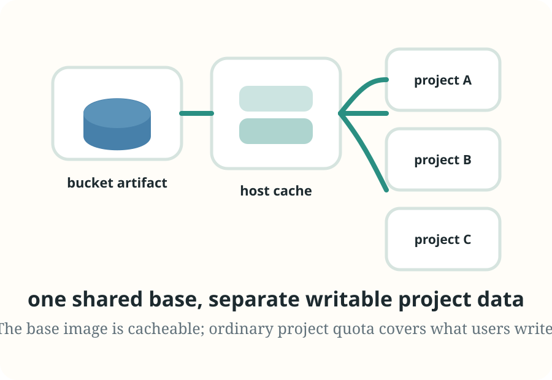

A CoCalc-AI field guide for environment builders
Creating and Managing Your Own RootFS
Turn a working project environment into a reusable RootFS image: one exact software stack for a course, a research group, a site, or a public library demo.

A RootFS is the visible Linux root filesystem for a CoCalc-AI project:
the system packages, command-line tools, libraries, and data that live
under /.
You can customize one project, publish that environment, and then reuse it. Instructors can give every student the same stack. A researcher can keep new projects consistent. Site admins can provide official environments. Library authors can publish a ready-to-run world for their software.
The point is not just convenience. It is reproducibility with a social shape: a named environment, a version trail, scan status, visibility, and a way to upgrade without erasing the past.
Use a RootFS when the environment is part of the work
Some projects need more than files. A numerical course needs a specific Python stack and datasets. A workshop needs command-line tools already installed. A site wants a blessed environment for a class of users.
A managed RootFS lets that environment become a reusable artifact instead of a setup paragraph that everyone runs slightly differently.

Build it in an ordinary project
Start with a normal CoCalc-AI project. Install system packages, language packages, datasets, fonts, command-line tools, and whatever your users should have on day one.
sudo apt-get update
sudo apt-get install -y graphviz ffmpeg
python -m pip install networkx pandas
python - <<'PY'
import networkx, pandas
print("environment ready")
PYLet Codex do the tedious part: read failures, install narrowly, verify directly, and leave a short setup note describing what the environment is meant to support.

Clean and scan before publishing
Before publishing, remove temporary files, private tokens, old build output, and anything that should not become part of the shared environment. A RootFS is meant to carry software and data, not secrets.
In Settings -> Environment -> Runtime Image, use Scan current RootFS as a preflight check. Published images can also carry catalog scan status, so users can see whether the exact release has known findings.
Please inspect this project before I publish its RootFS. Look for obvious secrets, temporary files, stale caches, and missing verification commands.

Publish a version, not a vibe
Publish from Settings -> Environment -> Runtime Image with Publish current RootFS. Give it a clear label, version, channel, tags, and description.
Choose the visibility deliberately: private for your own templates, collaborators for shared projects, public for environments you intend other site users to discover. Site admins can promote images to official and manage their lifecycle.
Publishing checklist
- Name what the image is for.
- Use a human version such as
2026-spring. - Record the verification command.
- Choose private, collaborators, or public.
- Keep the older version available for rollback.
Manage RootFS images like small releases
Choose a catalog image when creating or configuring a project.
CoCalc makes the managed RootFS available on the project host.
Publish a newer version and move projects when they are ready.
Keep the previous RootFS state as the safe return point.
Use the CLI when the lifecycle becomes operational
The UI is the right place to learn the workflow. The CLI is useful when an instructor, admin, or release maintainer wants repeatable operations.
cocalc rootfs list
cocalc rootfs publish \
--project "Math 480 template" \
--label "Math 480 Python stack" \
--image-version 2026-spring \
--visibility collaborators \
--wait
cocalc rootfs scan-auditAdmins also have commands for official images, scan reports, blocking, hiding, deletion, and garbage collection.

This is not just Docker with a prettier label
CoCalc can still use advanced OCI or Docker image strings, but the managed RootFS catalog is the native path. Publishing captures the visible project RootFS as an immutable CoCalc-managed release.
Managed releases are stored in CoCalc’s bucket-backed artifact system as compressed, deduplicated rustic snapshots. Project hosts restore them into a local cache and mount them as shared lower directories. That is why a base RootFS image does not count against ordinary project disk quota; only the project’s writable data does.

The environment becomes a thing you can share
A good RootFS image is not a frozen machine. It is a named, versioned, scanned starting point. Students, collaborators, and future projects can begin from the same foundation, then still make their own project-specific changes.
That is the useful middle ground: less fragile than setup instructions, lighter than asking everyone to build a container pipeline, and integrated with the same collaborative CoCalc project where the work happens.